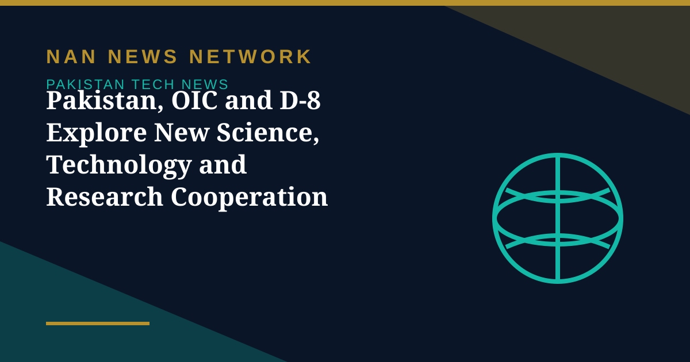

Pakistan, OIC and D-8 Explore New Science, Technology and Research Cooperation

Senior diplomat and former Pakistan ambassador to Nepal Abrar H. Hashmi has highlighted new opportunities for cooperation in science, technology, research and innovation among member countries of the Organisation of Islamic Cooperation (OIC) and the D-8 Organization, Sub News reported on November 1.
A meeting at COMSTECH
Hashmi said he had an excellent interaction with COMSTECH Coordinator General Prof. Dr. Muhammad Iqbal Ch., his team and visiting delegates at the COMSTECH Secretariat in Islamabad. The discussions focused on building on COMSTECH's contributions to advancing science and technology across OIC member states and exploring new avenues of collaboration under a recently signed Memorandum of Understanding with the D-8 Organization.
A network of 31 universities
A key area of discussion was expanding the hosting and activities of the Network of Pioneer Research and Innovation, which connects 31 universities from OIC and D-8 member countries. The network covers research fields including health, energy, agriculture, environment and minerals. The meeting also explored exchanges between centres of excellence and mutual learning, particularly in emerging research areas such as nanotechnology and stem cell research, as reported.
Sources: Sub News, November 1, 2026
More on Pakistan Tech News
- 1.5 Million Pakistani Children Faced Online Sexual Exploitation in a Year, UNICEF-Backed Study Finds
- Pakistan's Cyber Emergency Team Warns of Spyware That Can Infect Phones Through Online Ads
- Pakistan Climbs to 95th in Global Innovation Index 2026, Regaining 'Overperformer' Status
- Pakistan Launches New E-Passport With Chip, NFC and Biometric Security
- Pakistan Targets 50% Local Value Addition in Mobile Phone Manufacturing
- PTA Fines Mobile and Internet Firms Over Rs3.41 Billion Over Consumer Complaints
- PTA Warns of Rising 5G Security Risks as Cyber Alerts Top 10,000
- Pakistan Internet May Slow Until November 2 as AAE-1 Cable Undergoes Repairs
- PM Sets November Deadline for Alibaba-Backed AI and Digitalisation Projects
- Pakistan's 5G Now Reaches 24 Cities After $509 Million Spectrum Auction
- Pakistan Announces Urdu AI Model 'Buraq' to Keep National Data at Home
- PM Launches Two-Year Drive to Give 500,000 Chromebooks to Talented Students
- Pakistan to Host UN Space Technology Conference on Early Warnings and Climate Action
- PAK-US Tech Connect 2026 Takes 16 Pakistani Tech Firms Across America
- Pakistan Wins 11 Awards at the ASOCIO Digital and AI Awards 2026
- Pakistan Showcases AI Innovations at Abu Dhabi's AI Everything Global 2026